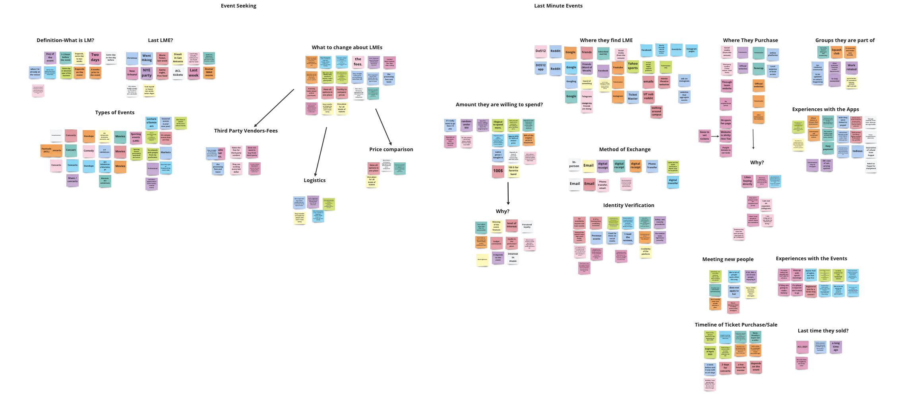
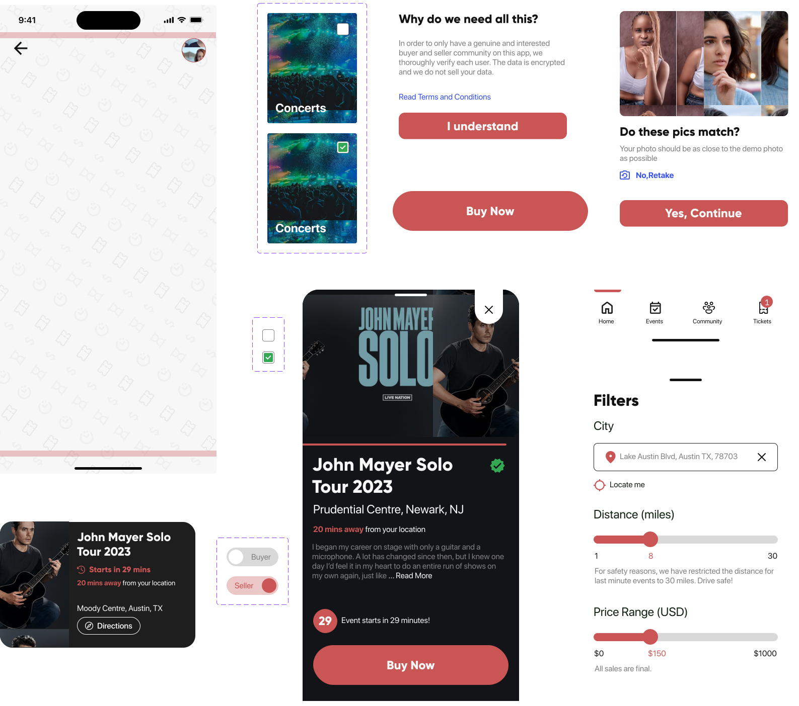

Lead UX/UI Designer, Visual Designer and Interviewer
The Last Minute app allows sellers of tickets for last minute events to potential buyers. This online marketplace allows people looking to resell tickets to sell unsold tickets to potential buyers, by providing an online ticketing service to the general public. It focuses on building a community by allowing individuals with similar interests to connect with others. These events range from movies, concerts, and performing arts as well to unticketed events like picnics and hikes. The platform quickly verifies tickets to ensure genuine purchases and create user safety through encryption. It allows users to create profiles so that they can showcase their hobbies and interests as well as allows them to filter events based on distance, area, type of event, and date.
We conducted interviews to gain insights into designing and developing the LastMinute app. The purpose of the interviews was to better understand the needs, preferences, and challenges of users who have purchased or sold tickets through similar apps or platforms.
Our participant criteria were broad in demographics but focused on two factors. The first is that the participant has attended an event in the past month. The second qualification was that the participant used electronic devices to find events and purchase tickets.
Participant age ranged from 22 to 49 and consisted of a mix of genders and professional experience. In total, we recruited 11 participants for a one-on-one interview lasting approximately 30 minutes.
Some of the pertinent questions we asked the interviewees were:
We used affinity mapping to condense common ideas and lines of thought based on feedback from users following our user research. We also gained a better understanding of the user's needs and our approach as a result of the process. Finally, we devised a more organized data collection strategy and a more streamlined approach to the project. The ideas were divided into seven groups, as shown below.
On the basis of the Affinity Mapping exercise, a few themes emerged.
There were a number of challenges when it comes to attending an LME. These challenges can be grouped into three categories:
Going to an LME leaves little time to organize details with others or find people wanting to attend the same event. Transferring tickets is a challenge based on technical skill level.
There is not one trusted site where people go to find an aggregated list of prices for events
Processing and vendor fees are an annoyance. “They are sucking every last dollar”
Anna Sri is a master’s student at the University of Texas. She just moved to the city and has already found a large group of friends. Anna is a critical thinker, which is why she is skeptical of websites using her data. She is also frustrated with websites collecting selling fees, and wishes she could cut out the middleman. Anna is tech-savvy when it comes to technology, as she finds most of her desired events on social media.

Steve Do is a 32-year-old marketing executive from San Francisco who is an avid music enthusiast. He is always on the lookout for the next big concert or show to attend, and he loves discovering new artists and genres. Steve's busy work schedule often leaves him with little time to plan his social life, but he always manages to find time for music. Despite his best efforts, Steve sometimes finds himself unable to attend concerts he has already bought tickets for. This situation leaves him feeling frustrated and worried about losing money on the tickets he can no longer use. He needs an app that will allow him to sell his tickets quickly, easily, and securely to avoid losing money.

From the aforementioned user behavior reports, we were able to map out an information architecture for our application that would best suit user needs and provide good affordances for tasks users might try and accomplish on our application.

To tinker around with ideas we started formulating after completing our user research and information architecture design phases, we started the ideation process, starting with sketching for a digital product.
We started the process with pen and paper sketching, before moving to a digital design tool like Figma or Sketch.

After sketching, the next step was to build some mid fidelity wireframes in Figma to start structuring the basic elements for our application.

The brand visuals for this app reflects the energy and excitement of live events, while also conveying a sense of security and trustworthiness. The use of bold colors, dynamic imagery, and clean design elements will help to convey the app's brand personality and message.

I designed a few reusable components as part of the mini design system for this project.
After building mid-fidelity wireframes, we started the visual design process, using a self-made style guide, and worked in the direction of building developer-handoff-ready, high-fidelity screens.


Using our initial prototype we conducted some user testing to find things which could be improved in subsequent iterations
You will find a clickable prototype of the product below. Have fun!

If you would like to access the detailed report for this project, the link is below.
I would like to express my deep gratitude to Professor Michael Mcquaid, my research supervisor, for his patient guidance, enthusiastic encouragement, useful critiques of this research work, advice, and assistance in keeping our progress on schedule. I would also like to thank my fellow classmates, and all the participants in our interviews and usability tests.